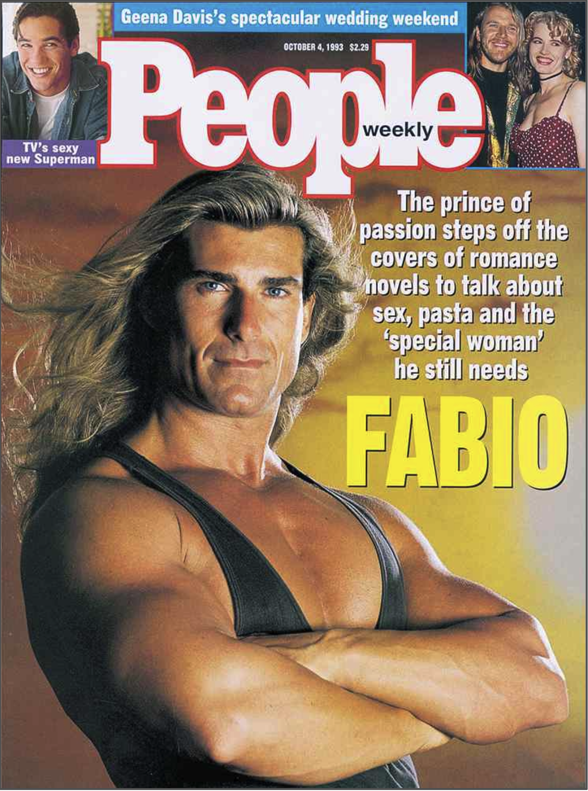

Modeling, Prediction, and ‘Least Squares’ Regression
WarningWhat these notes cover (intuition first):
What is a statistical “model”?
How linear models make predictions
“target variable” (also called the “outcome variable” or “dependent variable”)
“features” (also called “predictors” or “explanatory variables” or “independent variables”)
“coefficients”
the purpose of the “intercept” (essentially, a feature that is always 1)
What makes a “good” model?
Predictions close to the truth (small errors, also known as residuals)
Specifically, small squared errors / mean squared error (MSE)
Baseline models
Adding features
Why do we need an intercept?
(At the end) Understanding the mathematical notation for all of this:
\(\hat{y} = \beta_0 + \beta_1 x_1\)
\(y = \beta_0 + \beta_1 x_1 + \epsilon\)
\(y\) = target variable, \(\hat{y}\) = model prediction for that variable
\(\beta_0\) = intercept, \(\beta_1\) = slope on \(x_1\), \(\epsilon\) = error term
What’s a model anyway?
In normal conversation, we might describe an “architectural model” or a “model citizen” or a “fashion model.” All of these have something in common with the “models” we build in statistics.
Architectural model: a simplified version of a real thing
“The center has to be at least… three times bigger than this!” (Zoolander)
An architectural model is a miniature of something the builders are thinking of making. Having the miniature helps visualize what the final thing will look like. It gives you an idea of important things before you sink millions into building it: if the layout of the plaza seems to be working, where the light will land, things like that.
A model building is, obviously, NOT a building. It’s a simplified version of the real thing, which helps us understand how the real thing might work.
Model citizen / Fashion Model

“Fabio” was a famous Italian fashion model back in the 90s. (He also had a cameo in the Zoolander movie referenced above.)
When we look at an ad for clothes, usually it’s someone much better looking than us, showing off how good the clothes can look at their best. That is, it’s an idealized version of the real thing. As you’ll see, all statistical models are idealized versions of phenomena in the real world. Because the real world is far too complicated to fully bake into any math equation, we have to make idealized assumptions to have any shot at learning anything about the world.
Statistical models
Question: Does money buy happiness?
This is a question philosophers and psychologists have studied for ages, and the answer is complicated. With enough money, you don’t have to stress about rent, you can pay for daycare for your kids, you can go to college without taking on debt, you can travel to beautiful and interesting places – money helps. But it doesn’t fix your relationship with your mother, it can’t cure cancer, it doesn’t buy you close friends, and it can’t download statistics into your brain.
So how much does money really matter?
One way to approach this question is to build a model of the relationship between money and happiness. Because it’s complicated, we have to simplify reality by making some idealized assumptions.
We’ll gather some relevant data first. This one comes from the (wonderful) website Our World in Data. Have a look at the plot below of all the world’s countries. Each country is a point, its wealth is on the x axis (measured by GDP per capita), and its happiness on the y axis (average scores people gave on a survey, rating their life from 0 to 10).
“GDP per capita” you can (very) roughly think of as “how much money a typical person makes in a year”
We’ll measure GDP per capita in thousands of dollars, so a country with a GDP per capita of $50,000 has a gdp of 50 in our dataset.
// Built by Everett Wetchler + ClaudescatterChart({title:"Plot 1: Country-level happiness and GDP per capita, 2025",subtitle:"Hover over the points to see information about that country",ariaLabel:"Scatter plot of average happiness (0 to 10) against GDP per capita for 140 countries in 2025, colored by continent. Happiness rises steeply among the poorest countries, then levels off among wealthier ones."})
That’s a funny shape, but it looks like wealthier countries tend to be happier? Roughly?
Let’s make a statistical model of happiness.
A statistical model is a mathematical model, an equation. It tries to describe where a number, like happiness, comes from.
We’ll start with a very dumb model: “every country has the same happiness, no matter how much money they have.” That’s not going to be very helpful to our question about money and happiness, but you’ll see why we start here in a moment.
“Every country has the same happiness” looks like this, mathematically:
happiness = ?
We get to pick the value of ?. We could say “every country has a happiness of 5” or “every country has a happiness of 6.1.” All of these are valid models! None are very good, but some are definitely worse than others. “happiness = 0” is obviously worse than “happiness = 5.”
Whatever value we pick, we can plot our model equation on the scatter plot. Since these are all of the form happiness = (some constant), we’ll get a horizontal line.
Drag the line in the chart below to find the one you think is “best.”
// Built by Everett Wetchler + ClaudelineExplorer({title:"Plot 2: Try to find the \"best\" horizontal line",ariaLabel:"Scatter plot of happiness against GDP per capita, colored by continent, with a horizontal line you can drag up and down",start: {b:4}})
Make a note of what value you picked. We’ll check it out below.
How good is this model?
A good model should make predictions that are close to the truth. The difference between a prediction and the truth is called the error (or “residual” – what’s left over).
Below, we use the model happiness = 5. Since most countries don’t have a happiness of exactly 5, most of our model’s predictions are a little wrong (they have error). Hover over the points in the plot below to see the difference between a country’s true happiness and our model’s prediction.
// Built by Everett Wetchler + ClaudeerrorChart({title:"Plot 3: Errors from the model `happiness = 5`",subtitle:"Hover over a point to see the error on that prediction",ariaLabel:"Scatter plot of happiness against GDP per capita, colored by continent, with a horizontal model line at happiness = 5. Hover near a point to see its error."})
Obviously a better model has smaller errors. But in most of statistical modeling, we want to minimize squared errors. There are good theoretical reasons for using the square, which are beyond our scope here, but you can think of it as a way of avoiding really bad predictions.
Below is the same plot, but hovering shows you the squared errors (visualized as actual squares). These are what we are actually trying to minimize.
// Built by Everett Wetchler + ClaudeerrorChart({title:"Plot 4: Squared errors from the model `happiness = 5`",subtitle:"Hover over a point to see the squared error on that prediction",ariaLabel:"Scatter plot of happiness against GDP per capita, colored by continent, with a horizontal model line at happiness = 5. Hover near a point to see its squared error drawn as a square.",squared:true})
Notice how the squares grow really fast as you get further from our line. By trying to minimize squares, we try to avoid really bad predictions (that generate huge squares).
Mean Squared Error (MSE)
If you were to average the sizes of all the squares in the plot above, you’d get the mean squared error (MSE) of the model. For our purposes, MSE is a single number that tells us how good a model is. If your model fits the data well, errors are small, squared errors are small, and so mean squared error (MSE) is small. The ideal model would have ZERO error (every prediction is spot-on), meaning zero squared error and zero MSE.
Smaller MSE = better model
The plot above used happiness = 5. But remember, we can pick any value for ? in our model, happiness = ?.
Now drag the horizontal line in the chart below to find the intercept (? value) that minimizes MSE.
// Built by Everett Wetchler + ClaudelineExplorer({title:"Plot 5: Drag to find the horizontal line with the smallest MSE",subtitle:"You can still hover over the points to see what the squared errors look like",ariaLabel:"Scatter plot of happiness against GDP per capita with a horizontal line you can drag up and down; the line's mean squared error is shown and updates as it moves.",kind:"flat",showMSE:true,hoverSquares:true,start: {b:4}})
What intercept did you pick? As it turns out, for an intercept-only model like this, the best you can do is to just predict the average. The countries’ average happiness in this dataset is 5.68, and a horizontal line there gives an MSE of about 1.14. Was this close to what you settled on?
This best intercept-only (horizontal line) model we will call our baseline model. It’s the best we can do if we just make the same prediction for everyone. If we want to make a fancier model, we at least need to do better than that.
Baseline model: happiness = 5.68 (MSE = 1.14)
Doing better: different predictions for different levels of wealth
The whole point of this was to explore the relationship between money and happiness. So let’s make a model that lets wealthier countries have higher predicted happiness.
You might be tempted to write something like this:
happiness = ? * gdp
This model says, “A country’s happiness is some multiple of its gdp.” Sounds reasonable enough.
Drag the handle on the line below to change the value of ? and see what kinds of models you can make.
// Built by Everett Wetchler + ClaudelineExplorer({title:"Plot 6: `happiness = ? * gdp`",subtitle:"Rotate the line, then hover over some points to see just how big the squared errors get!",ariaLabel:"Scatter plot of happiness against GDP per capita with a line through the origin that you can drag to change its slope; the equation and mean squared error update as it moves.",kind:"origin",showMSE:true,hoverSquares:true,start: {m:0.05}})
These lines are… terrible. What’s the best you could do? An MSE of around 12 is about as good as it gets. That’s way worse than our previous model (MSE = 1.14) which just said “every country has a happiness of 5.68”! Why?
The problem is that this model, given the formula happiness = ? * gdp, HAS to predict a happiness of zero for a country with a gdp of zero. If you plug in 0 for gdp, no matter what ? is, ?*0 will be zero. In other words, this line HAS to go through the origin, (0,0). That’s a huge limitation, and it leads to only horrible models.
The fix: add an intercept
We let the line float up and down by adding a new adjustable part to the general model form:
happiness = ? + ? * gdp
You’ll recognize this as a variant of the classic formula for a line, y = mx + b (here we’ve just written it as y = b + mx).
This extra ? lets the line slide up and down and intersect the y-axis anywhere. Now play with the figure below to set both ? values. Drag up and down on the left end to change the intercept (first ?), and drag the handle on the right to rotate the line, changing the slope on gdp (the second ?). Try to find the best line!
// Built by Everett Wetchler + ClaudelineExplorer({title:"Plot 7: Find the best line, `happiness = ? + ? * gdp`",ariaLabel:"Scatter plot of happiness against GDP per capita with a line you can drag: the left end sets the intercept and the right end sets the slope; the equation and mean squared error update as it moves.",kind:"full",showMSE:true,hoverSquares:true,start: {b:3.5,m:0.01}})
How did you do? What values for the intercept and slope did you find gave you the smallest MSE?
It turns out the very best ? values for this model formula are: an intercept of 4.90 and a slope of 0.028:
happiness = 4.90 + 0.028 * gdp (MSE = 0.59)
Try it out. Recreate this “line of best fit” in the plot above. You should get an MSE of about 0.59. That’s a lot better than the MSE of the baseline model, which was 1.14.
When you truly minimize MSE, given the model constraints, you have found the “least squares” solution. Hence, what we are doing here is called least squares regression.
Interpretation
The model we just made says, “A country’s happiness works like this: happiness is 4.90, plus 0.028 for every thousand dollars of GDP per capita.”
Based on this model, it looks like money does matter… some. “0.028 for every thousand dollars” is not nothing, but it clearly doesn’t explain everything either (we didn’t predict everything exactly right). But it’s useful – it suggests that money does seem to matter, and by about what amount. Just like making a model of a building can suggest if the plaza layout is going to work out when you build it – it’s not a perfect approach, but it can be useful.
Importantly, we can’t conclude that more money causes more happiness from this model alone. All it says is that we can better predict a country’s happiness by knowing how wealthy it is. The evidence is merely suggestive of how much money might matter. We have a full lesson later on the intricacies of causation, which is at the core of science.
Finally, notice that even the best straight line we made doesn’t seem to fit our data all that great. There’s this whole curving thing going on – it looks like as countries get a little wealthier, happiness goes up a lot, but then further wealth doesn’t help as much. Keep this in mind for the next lesson, as we explore ways to capture this relationship more accurately.
Mathematical notation
We’ve been casual in our notation so far, which was important to get the intuition. But now let’s be a little more formal.
The thing we are trying to predict (happiness here) is called the target variable (also called the “outcome variable” or “dependent variable”) and usually written as \(y\).
The attributes of a country that inform our predictions (gdp here) are called features (also called “predictors” or “explanatory variables” or “independent variables”). These are usually written as \(x_1, x_2, x_3, ...\) depending on how many features we’re using. With our happiness = 4.90 + 0.028 * gdp model, we just have \(x_1\) (gdp).
The numbers we multiply the features by (the ? values we played with) are called coefficients. These are usually written as \(\beta_1, \beta_2, \beta_3, ...\). Here, we just have \(\beta_1\) (the slope on gdp, 0.028).
The intercept is actually a coefficient! Usually referred to as \(\beta_0\), it is one of the ?s we played with, and it is multiplied by an artificial feature \(x_0\) that is just 1 for every country. So we have TWO coefficients and TWO features – one feature is just always 1 for every country. Watch how that reduces our formula:
Where \(y\) is a country’s happiness, \(x_1\) is a country’s gdp, \(\beta_0\) is the intercept (4.90), and \(\beta_1\) is the slope on gdp (0.028).
If a new country were to be formed tomorrow, and we know its gdp was (say) $40,000, we could predict its happiness by plugging in \(x_1 = 40\) into our model:
…but Egypt’s actual happiness is 3.86, not 5.38! This equation is… not equal!
What we really have is an equation for the predicted happiness of Egypt. To indicate a prediction, we draw a “hat” on top of the \(y\), writing it \(\hat{y}\).
This is fine and correct. Our prediction is 5.38. It’s not equal to the truth, but we never claimed it was. The true happiness of Egypt is 3.86 – meaning we have an error/residual of -1.52.
We can keep the original \(y\) (no hat) equation if we include the error term explicitly.
// Built by Everett Wetchler + Claude// Shared frame for the happiness charts: title, axes, continent-colored points and legend.functionhappinessFrame({title, subtitle, ariaLabel, width =600, height =470}) {const data =transpose(happiness_data);const margin = {top: subtitle ?62:45,right:145,bottom:50,left:55};const x = d3.scaleLinear().domain([0, d3.max(data, d => d.gdp)]).nice().range([margin.left, width - margin.right]);const y = d3.scaleLinear().domain([0,10]).range([height - margin.bottom, margin.top]);const continents = ["Africa","Asia","Europe","North America","South America","Oceania"];const color = d3.scaleOrdinal(continents, ["#E69F00","#56B4E9","#009E73","#CC79A7","#D55E00","#0072B2"]);// gdp is in thousands of dollars; tooltips write out the full amountconst dollars = g => d3.format("$,.0f")(g *1000);const container = d3.create("div").style("position","relative").style("max-width",`${width}px`).style("margin","1rem auto");const svg = container.append("svg").attr("viewBox", [0,0, width, height]).attr("role","img").attr("aria-label", ariaLabel).style("width","100%").style("height","auto");// Parts of the title in `backticks` are set in monospace, like inline codeconst titleText = svg.append("text").attr("x", margin.left).attr("y",20).attr("font-size",16).attr("font-weight",600); title.split("`").forEach((part, i) => {const span = titleText.append("tspan").text(part);if (i %2===1) span.style("font-family","var(--bs-font-monospace, monospace)"); });if (subtitle) { svg.append("text").attr("x", margin.left).attr("y",40).attr("font-size",13).attr("fill","#666").text(subtitle); } svg.append("g").attr("transform",`translate(0,${height - margin.bottom})`).call(d3.axisBottom(x).ticks(7)).attr("font-size",11); svg.append("g").attr("transform",`translate(${margin.left},0)`).call(d3.axisLeft(y).ticks(10)).attr("font-size",11); svg.append("text").attr("x", (margin.left+ width - margin.right) /2).attr("y", height -10).attr("text-anchor","middle").attr("font-size",13).text("GDP per capita (thousands of dollars)"); svg.append("text").attr("transform",`translate(16,${(margin.top+ height - margin.bottom) /2}) rotate(-90)`).attr("text-anchor","middle").attr("font-size",13).text("Average happiness (0-10)");// Clip path for the plot area, for anything that could run past the axesconst clip = DOM.uid("plot-area"); svg.append("clipPath").attr("id", clip.id).append("rect").attr("x", margin.left).attr("y", margin.top).attr("width", width - margin.right- margin.left).attr("height", height - margin.bottom- margin.top);const points = svg.append("g").selectAll("circle").data(data).join("circle").attr("cx", d =>x(d.gdp)).attr("cy", d =>y(d.happiness)).attr("r",4.5).attr("fill", d =>color(d.continent)).attr("fill-opacity",0.6);const legend = svg.append("g").attr("transform",`translate(${width - margin.right+24},${margin.top+10})`); legend.append("text").attr("font-size",13).attr("font-weight",600).text("Continent"); continents.forEach((c, i) => {const row = legend.append("g").attr("transform",`translate(0,${22+ i *20})`); row.append("circle").attr("r",6).attr("cx",6).attr("cy",-4).attr("fill",color(c)); row.append("text").attr("x",18).attr("font-size",13).text(c); });// Hover tooltip, flipped to the left of the pointer near the right edgeconst tipBox = container.append("div").style("position","absolute").style("pointer-events","none").style("display","none").style("background","white").style("border","1px solid #ccc").style("border-radius","4px").style("padding","6px 8px").style("font-size","0.85rem").style("line-height","1.3").style("box-shadow","0 2px 6px rgba(0,0,0,0.15)").style("white-space","nowrap");const tooltip = {show: html => tipBox.style("display",null).html(html),// above: true puts the box above the pointer instead of beside itmove: (event, {above =false} = {}) => {const [px, py] = d3.pointer(event, container.node());const w = container.node().clientWidth;const h = container.node().clientHeight;const flip = px > w *0.6; tipBox.style("left", flip ?null:`${px +12}px`).style("right", flip ?`${w - px +12}px`:null).style("top", above ?null:`${py -10}px`).style("bottom", above ?`${h - py +12}px`:null); },hide: () => tipBox.style("display","none") };return {data, x, y, margin, width, container, svg, points, tooltip, dollars, clip};}
// Built by Everett Wetchler + Claude// Scatter plot colored by continent; hover a point for its details.functionscatterChart({title, subtitle, ariaLabel}) {const {container, points, tooltip, dollars} =happinessFrame({title, subtitle, ariaLabel}); points.on("pointerenter",function (event, d) { d3.select(this).raise().attr("r",7).attr("fill-opacity",1).attr("stroke","#333").attr("stroke-width",1.5); tooltip.show(`<strong>${d.country}</strong><br>`+`GDP per capita: ${dollars(d.gdp)}<br>`+`Average happiness: ${d.happiness.toFixed(2)}`); }).on("pointermove", tooltip.move).on("pointerleave",function () { d3.select(this).attr("r",4.5).attr("fill-opacity",0.6).attr("stroke",null); tooltip.hide(); });return container.node();}
// Built by Everett Wetchler + Claude// Hovering near a point draws its error (actual minus predicted) as a dashed line to the// model line and shows it in a tooltip. With squared: true, the dashed line is one side of// a square, drawn to the right unless that would leave the plot. predict(gdp) gives the// model's current prediction; isBusy() pauses the hover (e.g. while a line is dragged).functionerrorHover(frame, {predict, squared =false, isBusy = () =>false}) {const {data, x, y, margin, width, svg, points, tooltip, clip} = frame;const end = width - margin.right;const fmt = v =>`${v <0?"−":""}${Math.abs(v).toFixed(2)}`;// Drawn beneath the points so the hovered point stays on topconst below = () => points.node().parentNode;const square = svg.insert("rect", below).attr("clip-path", clip).attr("fill","#333").attr("fill-opacity",0.12).attr("stroke","#333").attr("stroke-width",1).attr("stroke-opacity",0.5).style("display","none");const errorLine = svg.insert("line", below).attr("clip-path", clip).attr("stroke","#333").attr("stroke-width",1.5).attr("stroke-dasharray","4,3").style("display","none");// Hover snaps to the nearest point, so tiny dots don't need precise aimingconst delaunay = d3.Delaunay.from(data, d =>x(d.gdp), d =>y(d.happiness));const nodes = points.nodes();let current =null;functionclear() {if (current !==null) { d3.select(nodes[current]).attr("r",4.5).attr("fill-opacity",0.6).attr("stroke",null); } current =null; errorLine.style("display","none"); square.style("display","none"); tooltip.hide(); }functionhighlight(i) {const d = data[i];const pred =predict(d.gdp);const px =x(d.gdp), py =y(d.happiness), my =y(pred); d3.select(nodes[i]).raise().attr("r",7).attr("fill-opacity",1).attr("stroke","#333").attr("stroke-width",1.5); errorLine.style("display",null).attr("x1", px).attr("x2", px).attr("y1", py).attr("y2", my);const err = d.happiness- pred;let html =`<strong>${d.country}</strong><br>`+`Actual happiness: ${d.happiness.toFixed(2)}<br>`+`Model prediction: ${pred.toFixed(2)}<br>`;if (squared) {// Side length in pixels is the error's height on screen, so it reads as a true squareconst side =Math.abs(py - my);const left = px + side > end ? px - side : px; square.style("display",null).attr("x", left).attr("y",Math.min(py, my)).attr("width", side).attr("height", side); html +=`Error: ${fmt(err)}<br><strong>Squared error: ${(err * err).toFixed(2)}</strong>`; } else { html +=`<strong>Error: ${fmt(err)}</strong>`; } tooltip.show(html); } svg.on("pointermove.hover", (event) => {if (isBusy()) return;const [mx, my] = d3.pointer(event, svg.node());const i = delaunay.find(mx, my);const d = data[i];if (Math.hypot(x(d.gdp) - mx,y(d.happiness) - my) >25) { clear();return; }if (i !== current) { clear(); current = i;highlight(i); }// Keep the box on the far side of the point from the model line tooltip.move(event, {above: d.happiness>=predict(d.gdp)}); }).on("pointerleave.hover", clear);return {clear};}
// Built by Everett Wetchler + Claude// Fixed model at happiness = 5, with errorHover on the points (Plots 3 and 4).functionerrorChart({title, subtitle, ariaLabel, squared =false}) {const model =5;const frame =happinessFrame({title, subtitle, ariaLabel});const {y, margin, width, container, svg} = frame;const lineColor ="#d47500";const end = width - margin.right; svg.append("line").attr("x1", margin.left).attr("x2", end).attr("y1",y(model)).attr("y2",y(model)).attr("stroke", lineColor).attr("stroke-width",3); svg.append("text").attr("x", end -4).attr("y",y(model) -9).attr("text-anchor","end").attr("font-size",16).attr("font-weight",600).attr("fill", lineColor).attr("paint-order","stroke").attr("stroke","white").attr("stroke-width",4).style("font-family","var(--bs-font-monospace, monospace)").text(`happiness = ${model.toFixed(1)}`);errorHover(frame, {predict: () => model, squared});return container.node();}
// Built by Everett Wetchler + Claude// Draggable model line over the happiness scatter plot. The model is// happiness = b + m * gdp, and `kind` sets which coefficients can move:// "flat" happiness = b one handle moves the line up and down// "origin" happiness = m * gdp one handle rotates the line around (0, 0)// "full" happiness = b + m*gdp the left handle moves the intercept (slope fixed),// the right handle rotates the line around its left end// With showMSE, the equation and the model's mean squared error sit in the top-left corner.// With hoverSquares, hovering a point shows its squared error against the current line,// and only the handles can be dragged; without it, dragging anywhere moves the line.functionlineExplorer({title, subtitle, ariaLabel, kind ="flat", showMSE =false, hoverSquares =false, start = {}, mseDigits =2}) {const frame =happinessFrame({title, subtitle, ariaLabel});const {data, x, y, margin, width, container, svg, clip} = frame;const lineColor ="#d47500";const left = margin.left, end = width - margin.right;const xMax = x.domain()[1];const clamp = (v, lo, hi) =>Math.max(lo,Math.min(hi, v));const round = (v, digits) =>+v.toFixed(digits);let b = start.b??0, m = start.m??0;let dragging =null;// Rotating lines ("origin", "full") swing around a pivot at the line's left end. Their// handle stays a fixed on-screen distance R from the pivot, like the end of a lever,// and the line extends past it to the edge of the plot.const top =y(10), bottom =y(0);const kx = (end - left) / xMax, ky = (bottom - top) /10;// pixels per unitconst R = (end - left) *0.8;const maxTilt =Math.sin(85*Math.PI/180);// stop just short of verticalconst screenAngle = slope =>Math.atan2(-slope * ky, kx); svg.style("touch-action","none").style("user-select","none");if (!hoverSquares) svg.style("cursor","ns-resize");const hover = hoverSquares?errorHover(frame, {predict: g => b + m * g,squared:true,isBusy: () => dragging !==null}):null;const line = svg.append("line").attr("clip-path", clip).attr("stroke", lineColor).attr("stroke-width",3);// Round handles. "updown" shows up/down chevrons; "rotate" shows curved arrows that// turn with the line, since dragging that handle swings the line around a pivot.functionmakeHandle(icon) {const g = svg.append("g").style("cursor", icon ==="rotate"?"grab":"ns-resize"); g.append("circle").attr("r",20).attr("fill","transparent");// larger grab area g.append("circle").attr("r",13).attr("fill", lineColor).attr("stroke","white").attr("stroke-width",2);const glyph = g.append("g").attr("fill","none").attr("stroke","white").attr("stroke-width",2).attr("stroke-linecap","round").attr("stroke-linejoin","round");if (icon ==="rotate") {// A gently bowed arc with solid arrowheads just past each end, so they don't overlap glyph.append("path").attr("d","M1.2,-5.3 A8.7,8.7 0 0,1 1.2,5.3"); glyph.append("path").attr("fill","white").attr("stroke","none").attr("d","M-0.5,-9.5 L3.98,-6.43 L-1.58,-4.18 Z M-0.5,9.5 L3.98,6.43 L-1.58,4.18 Z"); } else { glyph.append("path").attr("d","M-4,-2.5 L0,-7 L4,-2.5 M-4,2.5 L0,7 L4,2.5"); }return {g, glyph}; }const leftHandle = kind ==="full"?makeHandle("updown") :null;const rightHandle =makeHandle(kind ==="flat"?"updown":"rotate");const mono ="var(--bs-font-monospace, monospace)";const label = svg.append("text").attr("font-size",16).attr("font-weight",600).attr("fill", lineColor).attr("paint-order","stroke").attr("stroke","white").attr("stroke-width",4).style("pointer-events","none");const labelEq = label.append("tspan").style("font-family", mono);const labelMSE = showMSE? label.append("tspan").attr("x", left +12).attr("dy",22).attr("fill","#333"):null;if (showMSE) label.attr("x", left +12).attr("y",y(10) +18);else label.attr("x", end -18).attr("text-anchor","end");functionequation() {if (kind ==="flat") return`happiness = ${b.toFixed(1)}`;if (kind ==="origin") return`happiness = ${m.toFixed(3)} * gdp`;return`happiness = ${b.toFixed(2)} + ${m.toFixed(3)} * gdp`; }functiondraw() { line.attr("x1",x(0)).attr("y1",y(b)).attr("x2",x(xMax)).attr("y2",y(b + m * xMax));if (kind ==="flat") { rightHandle.g.attr("transform",`translate(${end},${y(b)})`); } else {// Lever handle at distance R along the line; its arrows turn with the lineconst a =screenAngle(m); rightHandle.g.attr("transform",`translate(${x(0) + R *Math.cos(a)},${y(b) + R *Math.sin(a)})`); rightHandle.glyph.attr("transform",`rotate(${a *180/Math.PI})`); }if (leftHandle) leftHandle.g.attr("transform",`translate(${left},${y(b)})`); labelEq.text(equation());if (showMSE) {const mse = d3.mean(data, d => (d.happiness- (b + m * d.gdp)) **2); labelMSE.text(`MSE = ${mse.toFixed(mseDigits)}`); } else {// Sit just above the line, or just below it when the line is near the top label.attr("y", b >9.3?y(b) +22:y(b) -9); } }functionupdate(event) {const [px, py] = d3.pointer(event, svg.node());const h = y.invert(py);if (kind ==="flat") { b =round(clamp(h,0,10),1); } elseif (dragging ==="intercept") {// Slope stays fixed; keep both the pivot and the lever handle inside the plotconst rise = R *Math.sin(screenAngle(m));const bLo = y.invert(Math.min(bottom, bottom - rise));const bHi = y.invert(Math.max(top, top - rise)); b =round(clamp(h, bLo, bHi),2); } else {// Point the line from the pivot toward the pointer, keeping the handle inside the plotconst pivotY =y(b);const a =Math.atan2(py - pivotY,Math.max(px -x(0),1));const s =clamp(Math.sin(a),Math.max(-maxTilt, (top - pivotY) / R),Math.min(maxTilt, (bottom - pivotY) / R)); m =round(-Math.tan(Math.asin(s)) * kx / ky,3); }draw(); }functiondrag(target, which) { target.on("pointerdown", (event) => {event.preventDefault();event.stopPropagation(); dragging =typeof which ==="function"?which(event) : which;if (hover) hover.clear(); target.node().setPointerCapture(event.pointerId);update(event); }).on("pointermove", (event) => { if (dragging) update(event); }).on("pointerup pointercancel", () => { dragging =null; }); }if (hoverSquares) {if (leftHandle) drag(leftHandle.g,"intercept");drag(rightHandle.g,"slope"); } else {// Drag anywhere; for "full", the left half moves the intercept and the right half the slopedrag(svg, (event) => kind ==="full"&& d3.pointer(event, svg.node())[0] < (left + end) /2?"intercept":"slope"); }draw();return container.node();}